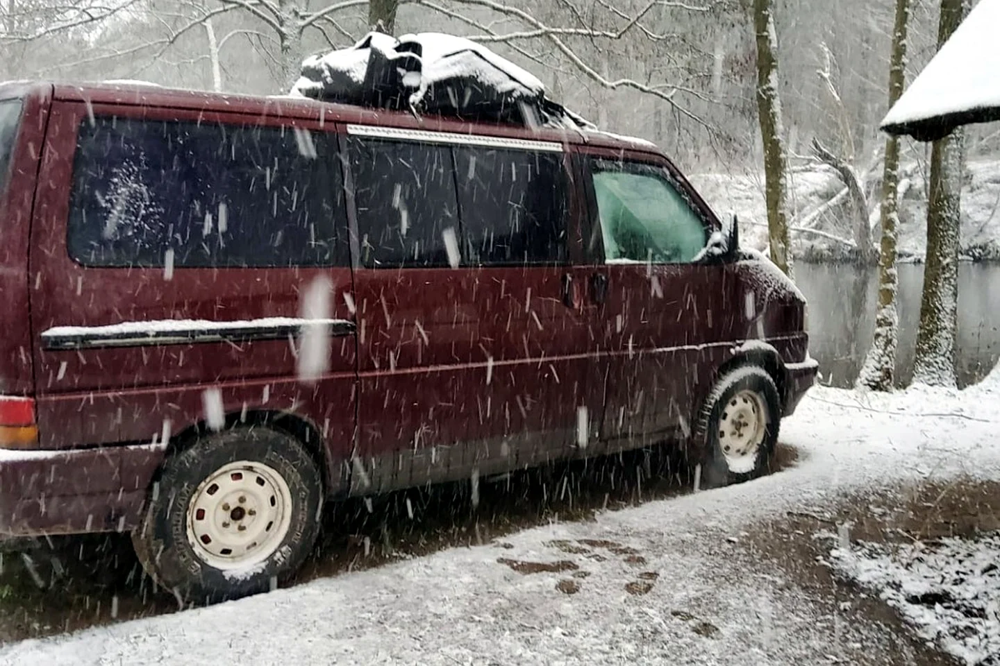

10 Monate leben auf kleinstem Raum — was Vanlife wirklich mit mir gemacht hat

Zehn Monate in einem T4 klingen für manche nach grenzenloser Freiheit und für andere nach Platzangst. Für mich waren sie beides — und noch sehr viel mehr. Ich habe an Seen geschlafen, im Regen gekocht, tausendmal umgeräumt und gelernt, wie wenig Raum ein Zuhause tatsächlich braucht.
Der schönste Raum war oft draußen
Das Foto aus meinem Bett mit Blick auf den See zeigt die Seite, die man sofort mit Vanlife verbindet. Tür oder Fenster auf, Wasser vor der Nase, kein Hotelzimmer könnte diese Aussicht ersetzen. An solchen Morgen fühlt sich der kleine Innenraum riesig an, weil die Landschaft einfach dazugehört.
Aber draußen ist nicht immer Postkartenwetter. Bei Regen, Wind oder Kälte findet das ganze Leben plötzlich im Bus statt. Schlafen, anziehen, kochen, arbeiten, aufräumen — alles auf wenigen Quadratmetern und oft auf derselben Fläche. Dann merkt man sehr schnell, ob der Ausbau wirklich zum eigenen Alltag passt.
Jeder Gegenstand muss seinen Platz verdienen
In einer Wohnung kann etwas monatelang unbenutzt in einer Schublade liegen. Im T4 nervt es jeden Tag. Nach und nach habe ich aussortiert, umgeräumt und feste Plätze geschaffen. Was häufig gebraucht wurde, musste erreichbar sein. Was nur „vielleicht irgendwann“ nützlich wäre, durfte gehen.
Ordnung wurde zu einer täglichen Bewegung
Vanlife bedeutet nicht, einmal perfekt zu packen. Es bedeutet, ständig zwischen Fahren und Wohnen zu wechseln. Bettzeug verschieben, Kochstelle freimachen, Tisch raus, Tisch rein, Schuhe trocknen, Kabel verstauen. Mit der Zeit liefen diese Handgriffe automatisch. Trotzdem blieb es Arbeit.
Was ich gewonnen habe
Ich wurde geduldiger, erfinderischer und unabhängiger. Ich habe gelernt, Probleme mit dem zu lösen, was gerade da ist. Gleichzeitig habe ich verstanden, wie wichtig Rückzug, Wärme und eine funktionierende Toilette sein können. Freiheit besteht nicht darin, nichts zu brauchen — sondern die eigenen Bedürfnisse zu kennen.
Zehn Monate auf kleinstem Raum haben mich nicht zur perfekten Minimalistin gemacht. Sie haben mir aber gezeigt, dass Zuhause kein Grundriss ist. Zuhause kann ein roter T4 im Wald sein, ein Bett am See oder einfach der Ort, an dem meine Sachen ihren Platz haben und ich die Tür hinter mir schließen kann.
Bis bald und immer gute Fahrt,
eure Tussy 💛